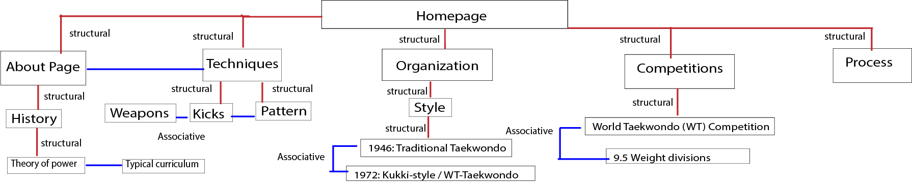
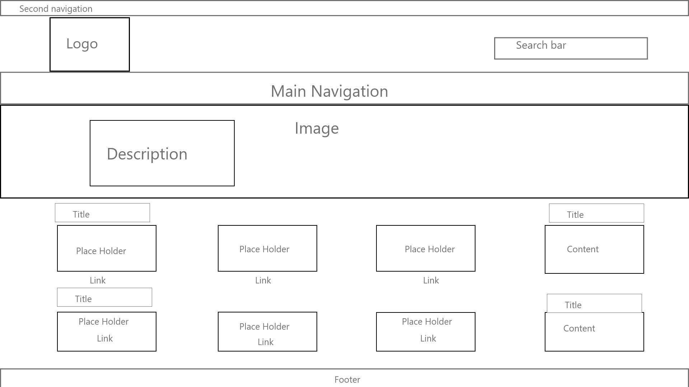
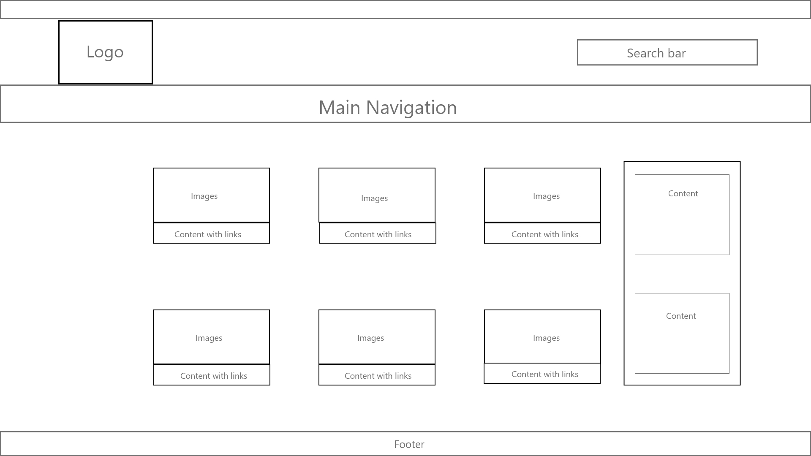

https://www.uwo.ca/
My new structure
Home page
Inner page
I chose this topic because this was something I have done in the past and something I am adequate with. Also there is a lot of content on the wikipedia.
I chose this website I like the purple asethics and the layout of the design because it is simple to read the titles, unlike some other university websites where there are too much content to fill up with. The homepage of this website does not have too many pictures for me to replace them with and I can show what I can do and achieve this topic. There were many things on the wikipedia content so I reduced to make it 4 main titles plus the process page. For the events I used the world taekwondo calender to see all the upcoming events and use it for the event. Somethings can be made into one section such as competitions and the notable people. Also The history of the sport can have 3 of the wikipedia sections into one. For spacing purposes on the page I reduced the amount of competitions
Some of the challenges I deal with is that I have to take a picture of my self doing these things. The way I dealt this problem is using a portable table and then add used a straight object to make my stand for my camera and had a count down. However there were some shots that were impossible to take with so I asked my family to take a shot such as the dutch shot. I told and positioned in the spot where I want a Another problem I encounter is gettin the accurate measurement of lines and color of the original website.
https://www.uwo.ca/
https://en.wikipedia.org/wiki/Taekwondo
https://www.w3schools.com/
http://www.worldtaekwondo.org/att_file_up/wt_calendar/2021%20WT%20EVENT%20CALENDAR(20210118).pdf
http://taekwondo-canada.com/news/